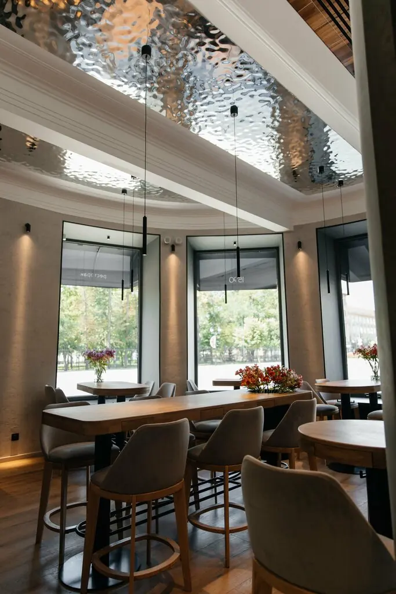
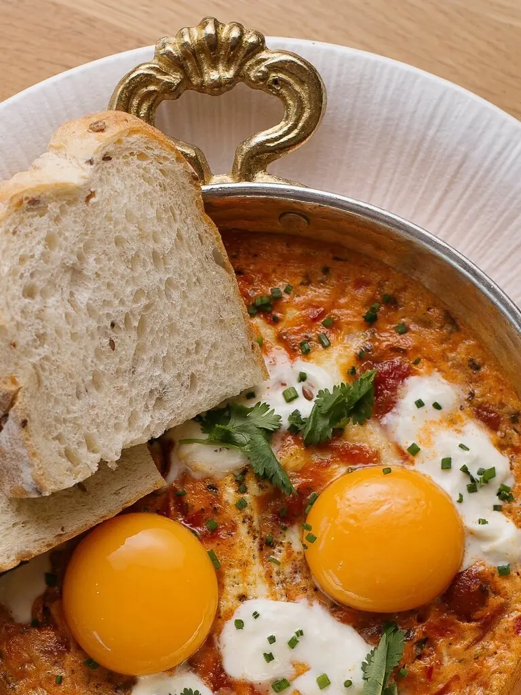
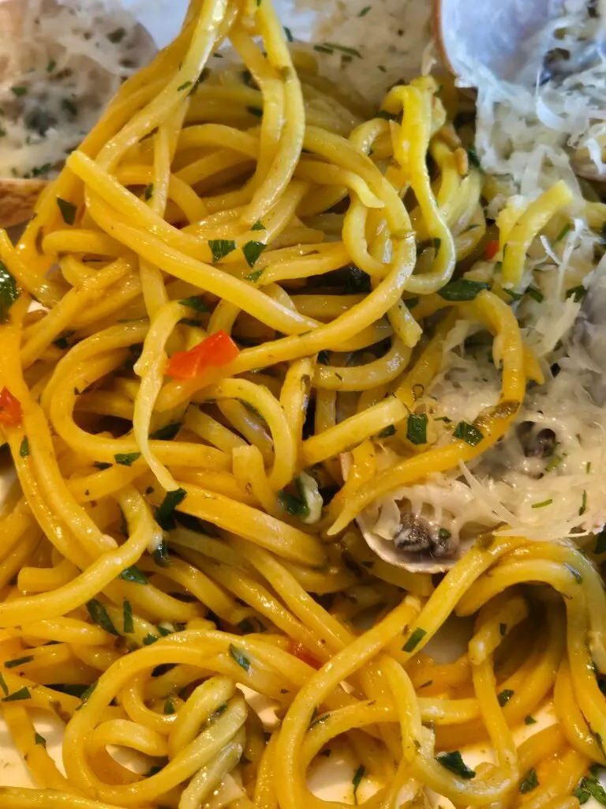
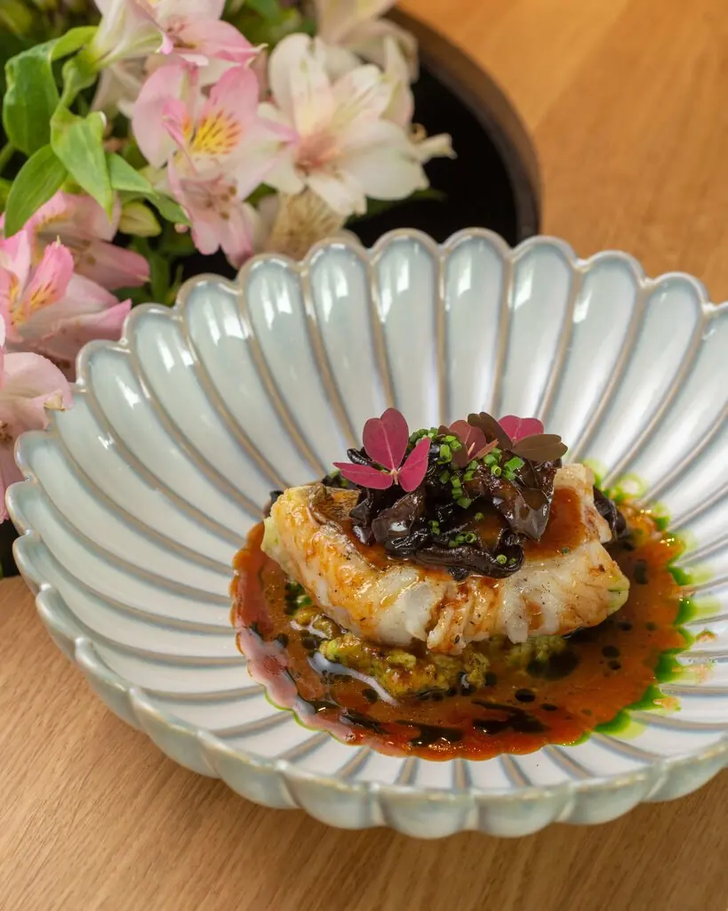
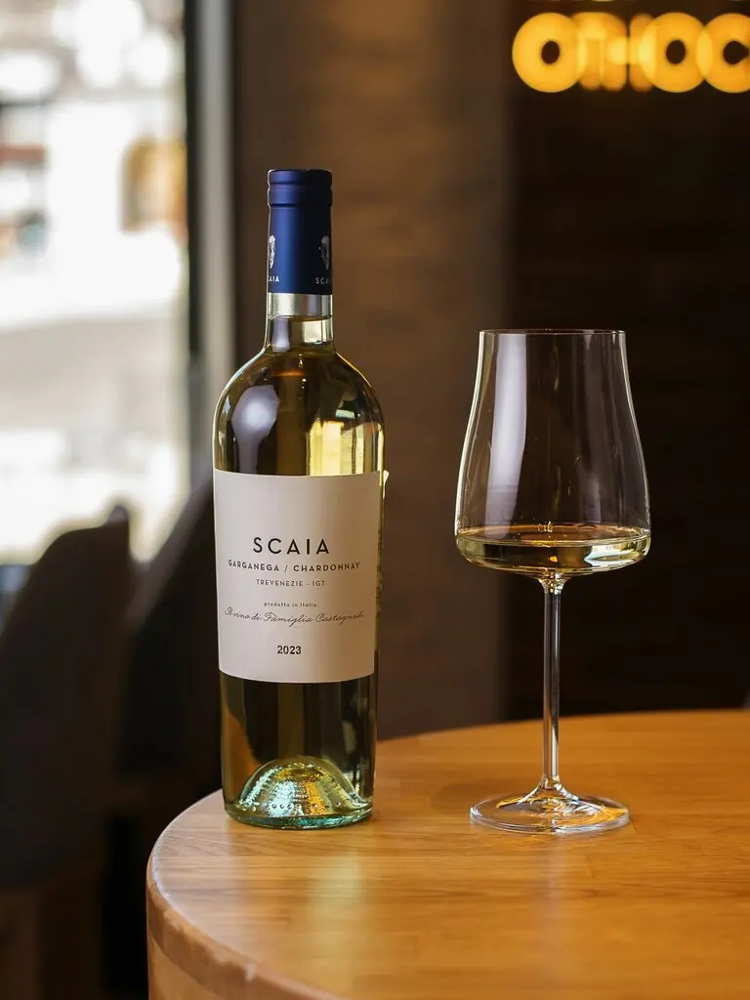

Саратов+7 937 222-15-90
1590
Год основания Саратова и название ресторана
Первый этаж старинного дома, панорамные окна и авторская кухня, которую дома точно не приготовишь. Всего 33 места.
4,6 · 166 оценок

Летопись одного дня
09:00. Утро
Шакшука с печёным перцем и страчателлой610 ₽
Круассан с ягодами и заварным кремом740 ₽
Круассан с лососем и авокадо890 ₽
Овсяная каша с солёной карамелью390 ₽

14:00. День
Азиатский суп с уткой900 ₽
Биск с морепродуктами1 310 ₽
Вареники с крабом и пармезаном1 110 ₽
Паста с вонголе и креветками900 ₽

20:00. Вечер
Краб со страчателлой и томатами1 310 ₽
Гребешок с манго и авокадо1 310 ₽
Эклеры с крабом и двумя видами икры1 380 ₽
Шоколад, малина и фисташка820 ₽

Завтраки до 16:00. Часть меню с Яндекс Карт, цены уточняйте у официанта.

Винный ресторан
Винная карта к авторской кухне. Столик лучше бронировать заранее: зал маленький.
Запись гостей
Звезду Мишлен дала бы не задумываясь, если бы была такая возможность.Полина Бельцова
Отличное тихое место. Биск весьма вкусный суп, краб со страчателлой прекрасно.Roman Rokityansky
Очень вкусная еда, красивая подача. Дома так точно не приготовишь.Светлана Г.